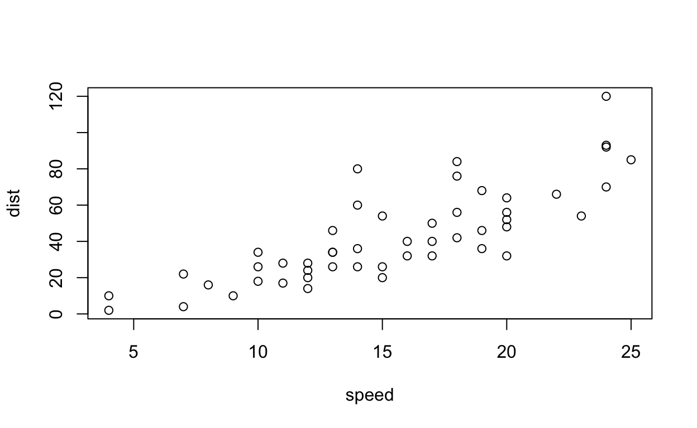

Warum R Markdown?
Was ist das überhaupt?
Markdown
Markdown ist eine vereinfachte Auszeichnungssprache, also eine maschinenlesbare Sprache für die Gliederung und Formatierung von Texten (und anderen Daten). Mit Auszeichnungssprachen werden Eigenschaften, Zugehörigkeiten und Darstellungsformen von Abschnitten eines Textes (Zeichen, Wörtern, Absätzen) beschrieben. Die Beschreibung erfolgt in Textform, wobei ein erklärtes Ziel von Markdown ist, dass der Quellcode leicht lesbar ist.
Ein Beispiel sagt mehr als 52 Worte
Normaler Text, Absätze und Zeilenumbrüche:
Normaler Text wird so dargestellt wie eingegeben.
Eine neue Zeile im Quelltext erzeugt keinen(!) manuellen Zeilenumbruch.
Zeilenumbrüche erzwingt man stattdessen durch zwei oder mehr Leerzeichen
am Ende einer Zeile.
Eine Leerzeile erzeugt einen Absatz.Normaler Text wird so dargestellt wie eingegeben. Eine neue Zeile im Quelltext erzeugt keinen(!) Zeilenumbruch. Zeilenumbrüche erzeugt man durch zwei oder mehr Leerzeichen
am Ende einer Zeile.
Eine Leerzeile erzeugt einen Absatz.
Hervorhebungen
*Kursiv*, **Fett** und ***Fett kursiv***Kursiv, Fett und Fett kursiv
Aufzählungen
* Ein Punkt in einer ungeordneten Liste
* Ein weiterer Punkt in einer ungeordneten Liste
* Ein Unterpunkt, um vier Leerzeichen eingerückt
* Statt * funktionieren auch + oder -- Ein Punkt in einer ungeordneten Liste
- Ein weiterer Punkt in einer ungeordneten Liste
- Ein Unterpunkt, um vier Leerzeichen eingerückt
- Statt * funktionieren auch + oder -
Überschriften
Überschriften und Unterüberschriften werden durch ein oder mehrere vorangestellte “#” ausgezeichnet. Je mehr “#”, desto tiefer die Unterüberschriften-Ebene. Dieser Text z.B, steht unter der Unterüberschrift “Überschriften”, die wiefolgt erstellt wurde:
#### ÜberschriftenHyperlinks
Webseiten
[Beschriftung des Hyperlinks](https://de.wikipedia.org/wiki/Markdown "Titel, der beim Überfahren mit der Maus angezeigt wird")Dateien
[Ein pdf](Example.pdf)[Dasselbe als docx](Example.docx)[Und nochmal als html](Example.html)Bilder einbetten
aus dem Netz

ein Beispielbild
vom lokalen Datenträger

Windenergieanlagen
Soweit, so gut. Damit lassen sich Dokumente relativ einfach strukturieren und formatieren.
“Aber all das kann ich auch mit Word oder PowerPoint”
wirst du jetzt erwidern.
Ja, stimmt, aber wir sind ja auch erst am Anfang.
R Markdown
Was ist nun R Markdown?
R Markdown ist ein Dateiformat zur Erstellung dynamischer Dokumente mit R. Ein R Markdown-Dokument wird in Markdown geschrieben (ein einfach zu schreibendes Klartextformat, siehe oben und kann Teile von eingebettetem R-Code enthalten.
Ein simples Beispiel:
---
output: html_document
---
Dies ist ein R Markdown Dokument.
Markdown ist eine einfache Auszeichnungssprache
um HTML, PDF, und MS Word Dokumente zu erstellen.
Ein Klick auf die **Knit** Schaltfläche generiert
ein Dokument, das die Markdown-Inhalte sowie die
Ergebnisse des eingebetteten R-Codes enthält.
R-Code wird folgendermaßen eingebettet:
```{r}
summary(cars)
```
Man kann auch Plots einbetten:
```{r, echo=FALSE}
plot(cars)
```In einem daraus generierten HTML-Dokument sieht das Ergebnis dann so aus:
Dies ist ein R Markdown Dokument. Markdown ist eine einfache Auszeichnungssprache um HTML, PDF, und MS Word Dokumente zu erstellen.
Ein Klick auf die Knit Schaltfläche generiert ein Dokument, das die Markdown-Inhalte sowie die Ergebnisse des eingebetteten R-Codes enthält. R-Code wird folgendermaßen eingebettet:
## speed dist
## Min. : 4.0 Min. : 2.00
## 1st Qu.:12.0 1st Qu.: 26.00
## Median :15.0 Median : 36.00
## Mean :15.4 Mean : 42.98
## 3rd Qu.:19.0 3rd Qu.: 56.00
## Max. :25.0 Max. :120.00Man kann auch Plots einbetten:
